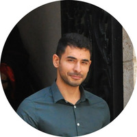

Saher Kawas

Github
Linkedin
Email
Language skills
Language
Speaking Level
Writing Level
Listening Level
English
Fluent
Advanced
Advanced
French
Advanced
Advanced
Advanced
Italian
Beginner
Beginner
Beginner
A little about me
I am a holder of a Bachelor's degree (BAC+4) in Business from Bethlehem University - Palestine, obtained in 2012. I also have a diploma in tourism guiding given by the same university in 2015. Noted for my language skills and adaptability, I had the opportunity to join the Media Office of the Latin Patriarchate of Jerusalem in 2015, despite having no specific training or experience in communication and journalism. Working alongside Palestinian and French colleagues, eager to learn and improve my writing skills, I quickly gained independence, to the point where, two years after my arrival, I was offered the role of director of the Media Office, a position I successfully held for 4 years.
Contact me
Name:
Email:
Message:
 Github
Github
 Linkedin
Linkedin
 Email
Email